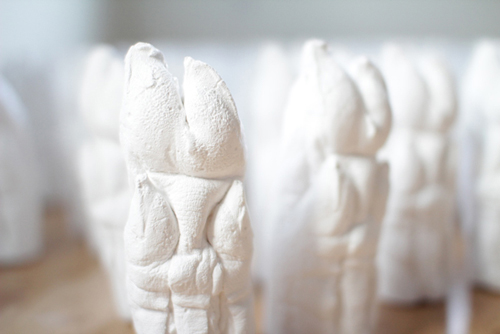
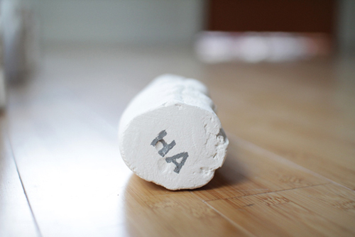
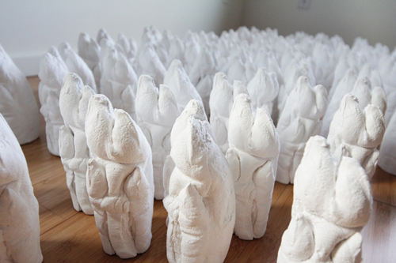
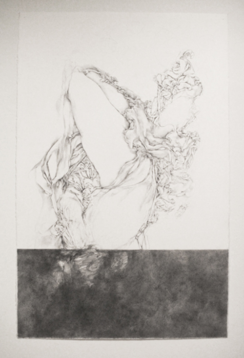
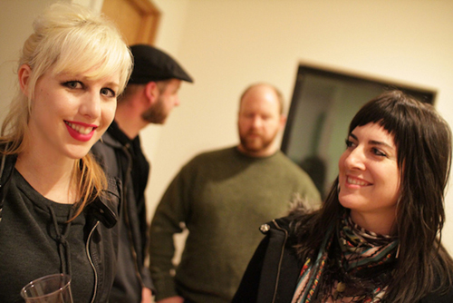
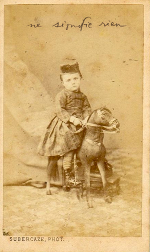

Trotter
by Amanda Manitach
March 5 - April 15 2011




Amanda talks about her show Trotter here.
above: Amanda Manitach and Sharon Arnold
All photos and delicious bacon wrapped treats by Damon Mori
HOU HOU HA HA video:
_______________________________________________________NEPO Little Treats: Trotter
Trotter
an exhibition of works by Amanda Manitach
Included are works about paratactic repetition, digestion, puerile slippage, baboonish ha-ha-ing, and trotting, realized in powder-white forests of pigs' feet and bouquets of imbecilically impacted drapery.
Please join us for the opening on Saturday March 5th 2011, 6 - 8 pm. As a small culinary treat, bacon-wrapped dates will be served from the kitchen. Special screening of Cremaster 4 following the show at 8 pm.
This is our second installment in NEPO Little Treats series of exhibitions at NEPO House. Little Treats is a series of monthly shows that focus on presenting new work by individual artists and small group shows. In order to avoid moving too much furniture the shows take place only and entirely in our entry room.
NEPO House regular open hours are Wednesdays and Thursdays 12 -2 pm and by appointment.
Read this: Amanda talks about her upcoming show Trotter.
_______________________________________________________